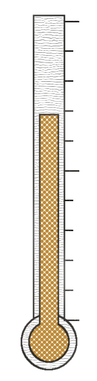
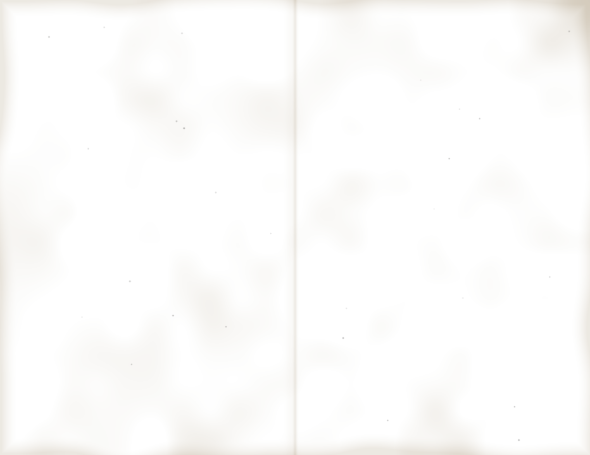

ST. CECILIA’S CHURCHFROM THE RECTORY
BANNS OF MARRIAGE
Loretta Castorini and John Cammareri, both of this parish. First time of asking.
Anthony Ferraro and Donna Lisi. Second time of asking.
If you know any reason why these couples should not marry, please tell the pastor.
PLEASE PRAY FOR THE SICK
Mrs. Cammareri (in Palermo), Frank Spina, Ann Marie Doyle, and all our homebound.
ON THE FRONT STEPS
Dog walkers, please keep the steps clear before the 9 o’clock Mass. This means the gentleman with all the dogs.
LAST SUNDAY’S COLLECTION
Envelopes and loose $3,418.50
Roof fund $612.00
The roof fund now stands at $27,200 of $40,000. Thank you.

40,000
20,000
HOLY NAME SOCIETY$5.00
Communion breakfast after the 9 o’clock Mass, school cafeteria. Children $3.00.
Eggs in the hole
Thick white toast fried in butter with a ring of sweet red pepper, the yolk left soft in the middle.
Sausage and home fries
Sweet links from the pork store, potatoes crisped with onion.
Juice and coffee
Orange juice by the glass, coffee from the big urn.
2
The Parish Council invites you to the
Bella Luna
DINNER DANCE
Saturday at 7 o’clock in the school hall. Music by the Sal Esposito Trio. $22.50 a person, tables of ten. Tickets at the rectory.
DINNER
Antipasto
Salami, provolone, roasted peppers and olives.
Escarole soup
Tiny meatballs, grated cheese.
Baked ziti
Ricotta and mozzarella in Sunday gravy.
Chicken scaloppine
Cutlets pounded thin and floured, sautéed with lemon, white wine, capers and butter.
Tossed salad
Oil and vinegar.
Sheet cake
With coffee, and anisette on every table.
CASH BAR
Amaretto sour2.50
Shaken frothy with lemon and egg white, over ice, a cherry on top.
Highballs2.50
Rye and ginger ale, scotch and soda.
House wine2.00
Red or white, by the glass.
Beer1.50
Bottles, on ice.
Soda.75
For the children.
ROSARY SOCIETY BAKE SALEafter every Mass
Rosemary focaccia.75 slice
4.00 pan
4.00 pan
Olive oil bread baked in sheet pans, dimpled and scattered with coarse salt.
Cannoli1.00
Sweet ricotta with grated orange peel, chocolate-dipped ends. Filled while you wait.
Pignoli cookies6.00 lb
Almond paste and pine nuts.
Sfogliatelle1.25
Flaky shells, ricotta and citron.
3
